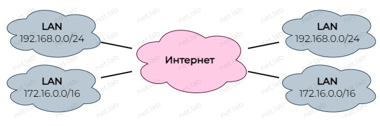
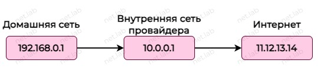
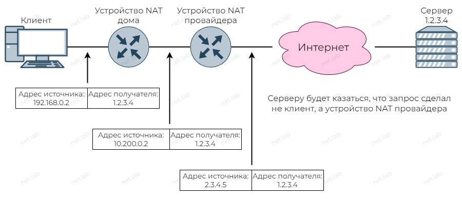
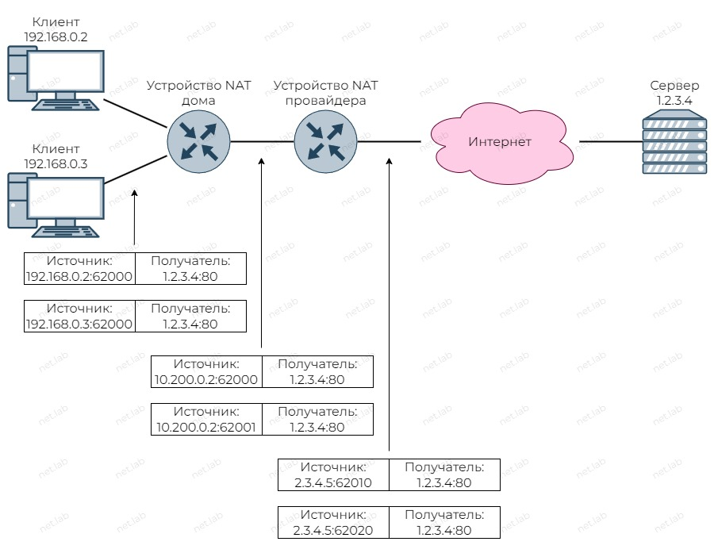
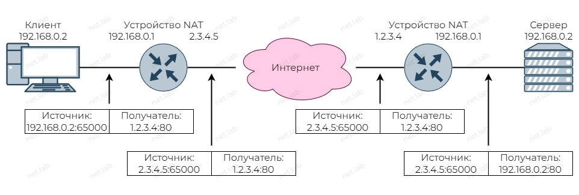
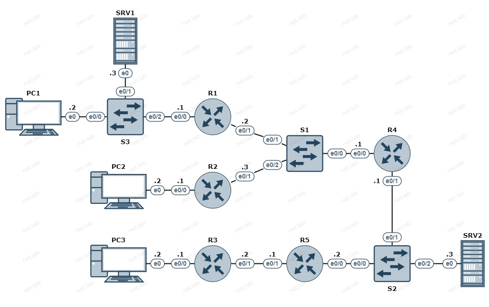
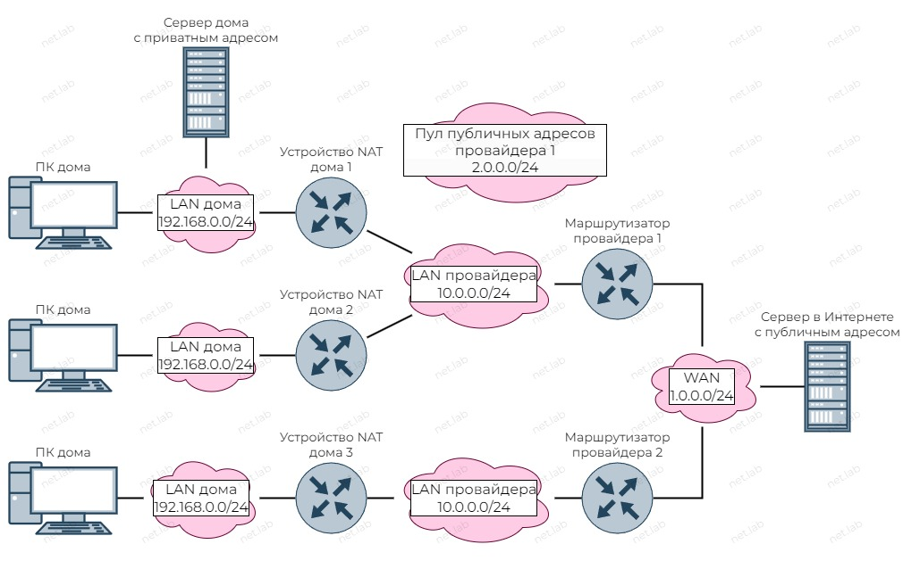
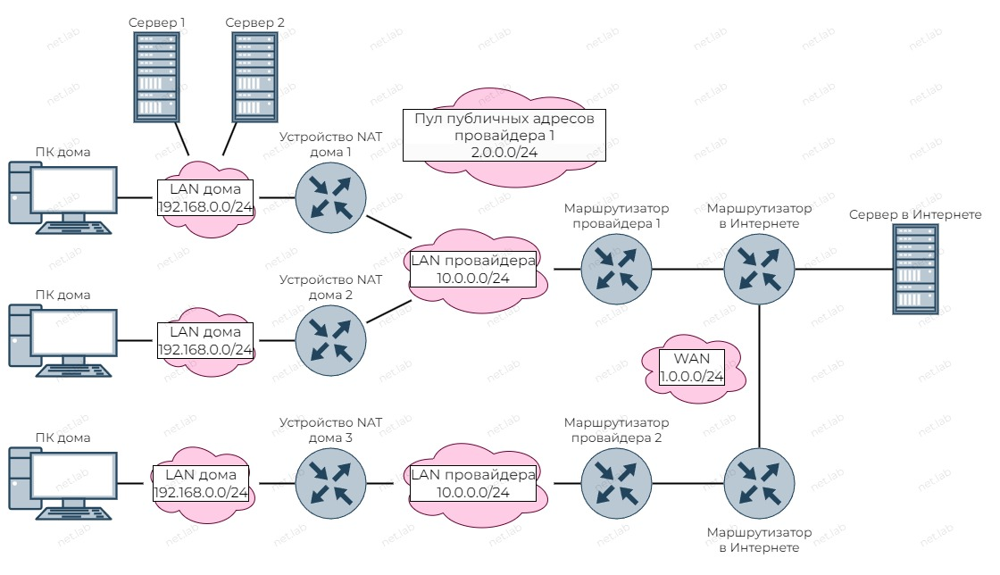

NAT
Теоретические сведения
Синонимы:
- Network Address Translation
- Трансляция сетевых адресов
- Преобразование сетевых адресов
Зачем нужен NAT
- Экономия IPv4-адресов, т.к. публичных IPv4-адресов недостаточно для обеспечения уникальности всех устройств

- Частные (приватные) адреса всетречаются повсюду

- Частные адреса преобразуются в другие частные или публичные адреса

Приватные адреса
10.0.0.0/8172.16.0.0/12192.168.0.0/16
Кто может использовать адреса?
- Приватные (или серые) - все, кто хочет и как хочет
- Публичные (или белые) - НЕ могут использоваться всеми
С помощью приватного адреса нельзя добраться в Интернете до ресурсов, поэтому частные адреса преобразуются в публичные.
Конфиденциальность и безопасность сети
- Со стороны Интернета не видна структура внутренней сети
- Со стороны Интернета невозможно попасть во внутреннюю сеть просто так
- Проброс портов
- Сначала запрос из внутренней сети, только потом может быть пропущен ответ из Интернета во внутреннюю сеть

-
Если клиентов во внутренней сети несколько, и все они обращаются на один сервер, то для сервера у клиентов один и тот же IP-адрес
- Сервер отличает их по портам транспортного уровня
- Устройства NAT отличают ответы от сервера тоже по портам, для этого у них есть специальная таблица
-
Несколько клиентов во внутренней сети обращаются к одному серверу во внешней сети

Типы NAT
- Взаимно-однозначное соответствие между локальным и глобальным адресами
- Назначается администратором
- Может потребоваться большое количество
- Целесообразно использовать только для серверов
- Если устройство, за которым закреплен адрес, не выходит в Интернет, то и адрес "простаивает"
- Сопоставление адресов по схеме "многие ко многим" между локальными и глобальными адресами
- Отличается от статического тем, что за устройством не закреплен публичный адрес, поэтому "простои" глобального адреса менее заметны
- Сопоставление адресов по схеме "многие к одному" между локальными и глобальным адресами
- По умолчанию используется большинством домашних маршрутизаторов
- Клиенты "отличаются" портами
- Если нельзя сохранить оригинальный порт, то выбирается следующий доступный
- Если нет доступных портов, то выбирается следующий адрес с оригинальным портом
Проброс портов
Позволяет получить доступ к ресурсам, которые находятся во внутренней сети, со стороны Интернета.
- На устройстве NAT, к которому подключен сервер, необходимо настроить проброс портов
- Проброс портов может быть множественным

DDNS
- Провайдер выдает публичный адрес, но он может меняться, т.е. адрес не статический
- Служба DNS, которая автоматически меняет DNS-записи, когда адрес изменяется
- Маршрутизатор следит за изменением адреса
- На этом же маршрутизаторе настраивается DDNS, если поддерживается
Пример
- В каждой локальной сети есть несколько ПК
- Везде в примере адреса статические, но они могут быть и динамиечкими при определенных условиях
- В LAN дома 1 есть сервер, который пользователь хочет сделать доступным из сети Интернет
- Любое устройство должно уметь общаться с сервером в Интернете
- VLAN для деления частных и публичных адресов в сети провайдера 1
L1 схема

L3 схема

Настройка домашней сети 1
conf t
int e0/0
ip add 192.168.0.1 255.255.255.0
no sh
end
ip 192.168.0.2/24 192.168.0.1
ip 192.168.0.3/24 192.168.0.1
Настройка домашней сети 2
conf t
int e0/0
ip add 192.168.0.1 255.255.255.0
no sh
end
ip 192.168.0.2/24 192.168.0.1
Настройка домашней сети 3
conf t
int e0/0
ip add 192.168.0.1 255.255.255.0
no sh
end
ip 192.168.0.2/24 192.168.0.1
Настройка сети провайдера 1
conf t
int e0/1
ip add 10.0.0.2 255.255.255.0
no sh
end
conf t
int e0/1
ip add 10.0.0.3 255.255.255.0
no sh
end
conf t
int e0/0
ip add 10.0.0.1 255.255.255.0
no sh
end
Настройка сети провайдера 2
conf t
int e0/1
ip add 10.0.0.2 255.255.255.0
no sh
end
conf t
int e0/1
ip add 10.0.0.1 255.255.255.0
no sh
end
Настройка сети "Интернет"
conf t
int e0/1
ip add 1.0.0.1 255.255.255.0
no sh
end
conf t
int e0/0
ip add 1.0.0.2 255.255.255.0
no sh
end
ip 1.0.0.3/24
⚠️ На данный момент устройства, находящиейся в разных сетях, не будут доступны друг другу.
Если на PC1 выполнить ping 10.0.0.1, то будет timeout потому, что R4 не знает, куда отправить ответ.
Если же на PC1 выполнить ping 10.0.0.2, то доступ есть, т.к. пингуется R1, а он одним интерфейсом находится в той же сети, что и PC1.
Настройка NAT в домашних сетях
Необходимо указать, какой интерфейс на маршрутизаторе будет внутренним, а какой - внешним.
conf t
int e0/1
ip nat outside
exit
int e0/0
ip nat inside
end
Далее настройка самого NAT. В данном случае будет PAT. С помощью ACL указывается, какие адреса необходимо преобразовывать.
conf t
access-list 1 permit 192.168.0.0 /24
ip nat inside source list 1 interface e0/1 overload
end
Теперь PC1 должен "пинговать" R4.
Аналогичные настройки выполняются на R2 и R3.
conf t
int e0/1
ip nat outside
exit
int e0/0
ip nat inside
exit
access-list 1 permit 192.168.0.0 /24
ip nat inside source list 1 interface e0/1 overload
end
Теперь PC2 должен "пинговать" R4.
Будет ли PC2 пинговать R1?
conf t
int e0/1
ip nat outside
exit
int e0/0
ip nat inside
exit
access-list 1 permit 192.168.0.0 /24
ip nat inside source list 1 interface e0/1 overload
end
PC3 теперь "пингует" R5.
Настройка NAT в сетях провайдера
Настройки аналогичные.
conf t
int e0/1
ip nat outside
exit
int e0/0
ip nat inside
exit
access-list 1 permit 10.0.0.0 /24
ip nat inside source list 1 interface e0/1 overload
end
conf t
int e0/0
ip nat outside
exit
int e0/1
ip nat inside
exit
access-list 1 permit 10.0.0.0 /24
ip nat inside source list 1 interface e0/0 overload
end
Если попробовать "пропинговать" сервер в Интернете с любого ПК, то ничего не выйдет. Происходит так потому, что на R1-3 нет маршрутов в ту сеть. Можно создать такой маршрут, или маршрут по умолчанию.
conf t
ip route 0.0.0.0 0.0.0.0 10.0.0.1
end
✔️ Теперь все смогут "пинговать" сервер в Интернете.
На данный момент доступ к SRV1 есть только у устройств из домашней сети 1.
Кого сможет пинговать SRV2 на данный момент?
Настройка доступа к SRV1 из "Интернета"
Пусть у SRV1 будет публичный адрес 1.0.0.10. Далее продемонстрирована настройка статического NAT.
conf t
ip nat inside source static 10.0.0.10 1.0.0.10
end
sh ip nat transl
Pro Inside global Inside local Outside local Outside global
--- 1.0.0.10 10.0.0.10 --- ---
Из-за двойного NAT необходимо выполнить еще настройки на R1.
conf t
ip nat inside source static 192.168.0.3 10.0.0.10
end
sh ip nat transl
Pro Inside global Inside local Outside local Outside global
--- 10.0.0.10 192.168.0.3 --- ---
R1#
✔️ Теперь можно "пинговать" SRV1 с других устройств. "Пинговать" нужно публичный адрес SRV1 - 1.0.0.10.
PC2 может пинговать SRV1 по адресу 10.0.0.10. PC3 так сделать не сможет. Почему?
Настройка статического NAT при такой схеме не очень удобна и на самом деле не очень реализуема, т.к. нужно "заставить" провайдера настроить статический NAT.
Использование VLAN для выдачи публичных адресов
- В сети провайдера 1 выдана публичная сеть -
2.0.0.0/24 - R1 провайдер выдал публичный адрес -
2.0.0.10 - R2 не должен получать публичный адрес
- R5 и SRV2 нужно рассказать, где находится эта публичная сеть
- На R1 нужно будет все равно настроить статический NAT, но провайдеру уже не нужно будет выполнять дополнительных настроек
- VLAN 2 - для публичной сети
- VLAN 10 - для приватной сети
Сначала будет удален адрес на R4 для создания подынтерфейсов.
conf t
int e0/0
no ip add 10.0.0.1 255.255.255.0
end
conf t
int e0/0.2
enc dot1q 2
ip add 2.0.0.1 255.255.255.0
exit
int e0/0.10
enc dot1q 10
ip add 10.0.0.1 255.255.255.0
end
Далее нужно настроить транк и порты доступа на S1.
conf t
int e0/0
sw trunk enc dot1q
sw mode trunk
exit
int e0/1
sw mode access
sw access vlan 2
exit
int e0/2
sw mode access
sw access vlan 10
end
На R2 не нужны никакие изменения, а на R1 нужно назначить публичный адрес на порт e0/1. По идее он должен выдаваться динамически с привязкой к MAC-адресу, но в примере, как уже было отмечено, все адреса статические.
conf t
int e0/1
no ip add 10.0.0.2 255.255.255.0
ip add 2.0.0.10 255.255.255.0
end
На R1 нужно добавить новое правило трансляции и удалить старое.
conf t
no ip nat inside source static 192.168.0.3 10.0.0.10
ip nat inside source static 192.168.0.3 2.0.0.10
end
sh ip nat translations
Осталось настроить маршруты в сеть 2.0.0.0/24 на R5 и SRV2. На SRV2 можно задать только шлюз по умолчанию.
conf t
ip route 2.0.0.0 255.255.255.0 1.0.0.1
end
conf t
ip route 0.0.0.0 0.0.0.0 2.0.0.1
end
ip 1.0.0.3/24 1.0.0.1
✔️ Теперь SRV1 будет доступен всем по адресу 2.0.0.10.
По какому пути идет трафик от PC2 до SRV1?
Динамический NAT
ip nat pool NAME IP1 IP2 NETMASK - создать диапазон адресов
access-list 1 permit IP WILDCARD - создать ACL
ip nat inside source list 1 pool NAME - настройка динамического NAT
Проброс портов
Нужен когда есть публичный адрес, внутри сети несколько сервисов и между ними нужно разделить адрес. Но т.к. адрес один, тогда делить нужно порты.
ip nat inside source static tcp/udp LOCAL-IP PORT GLOBAL-IP PORT - создать правило
clear ip nat translations * - очистить таблицу трансляции
🧰 Лабораторная работа
Ознакомиться перед выполнением
- Вместо ❔ или
xнужно подставить свой номер по журналу - Выполнять задание без "отмашки" не стоит ⛔, т.к. задание здесь может отличаться от актуальной версии
- У каждой работы есть срок сдачи 📅, который озвучивается на занятии, после которого работа не может быть защищена на максимальный балл 📉
- Дополнительные задания 📚 не являются обязательными, но по результатам сдачи лабораторной работы может быть выдано одно или несколько из них. Также дополнительное задание может быть сформулировано устно
- Для каждой лабораторной работы должен быть отчет 📝 с описанием выполнения ваших действий, оформление должно соответствовать требованиям (см. на сайте учебного заведения)
- Нужно уметь ответить на вопросы ❓ по теме, контрольные вопросы и другие связанные вопросы
- Примеры могут быть выполнены по желанию, а также выданы в качестве дополнительного задания с изменениями или без в случае неуспешной 😢 защиты основной работы
- Иногда в работах встречаются задания по IPv4 и IPv6 одновременно 🔗. Это считается как одна работа. Допускается сдача работы только с IPv4 или только с IPv6, но максимальный балл в таком случае получить невозможно
🎯 Цель работы: получить навыки настройки NAT.
Схема

Условия
- В домашних сетях использовать сети
192.168.x.0/24 - В сетях провайдера использовать сети
10.0.x.0/24 - В "Интернете" использовать произвольные подсети из сети
1.0.x.0/24 - Сеть публичных адресов провайдера 1 -
2.0.x.0/24 - Для доступа в "Интернет" использовать PAT там, где не противоречат другие пункты условий
- В схеме должен быть настроен двойной NAT
- Доступ к серверу 1 и 2 из WAN должен осуществляться с помощью проброса порта
2000 + x(например, 2001); проверить можно с помощью ping ? (указав порт udp/tcp) - Доступ к ПК дома 3 из WAN должен осуществляться с помощью статического NAT
- Везде статическая маршрутизация
- Маршрутизаторы провайдера являются устройствами NAT
- Из WAN нельзя добраться к LAN сетям по приватным адресам
- В LAN сети провайдера 1 использовать VLAN для деления на приватную и частную подсети
📚 Дополнительные задания
- Изменить соединения/расположение устройств.
- Изменить адресацию и подсети.
- Изменить тип NAT.
- Добавить динамическую выдачу сетевой конфигурации на домашние маршрутизаторы со стороны провайдера.
🤔 Контрольные вопросы
- Указывает ли что-то в Wireshark на то, что происходит трансляция адресов (если при этом не знать структуру сети)?
- Чем отличается динамический NAT от PAT?
- Используется ли у вас дома NAT? Если да, то какой тип?
- Можно ли на вашем домашнем маршрутизаторе настроить port forwarding?
- Где используется двойной NAT и зачем?
- Что нужно сделать, чтобы организовать доступ из "Интернета" для ПК в домашней сети 2?
Используя данный сайт и его ресурсы, вы соглашаетесь с политикой и соглашениями сайта.
©️ Оформление, изложение, медиаматериалы. И. Попов, 2020-2025
Сделано с помощью Material for MkDocs.